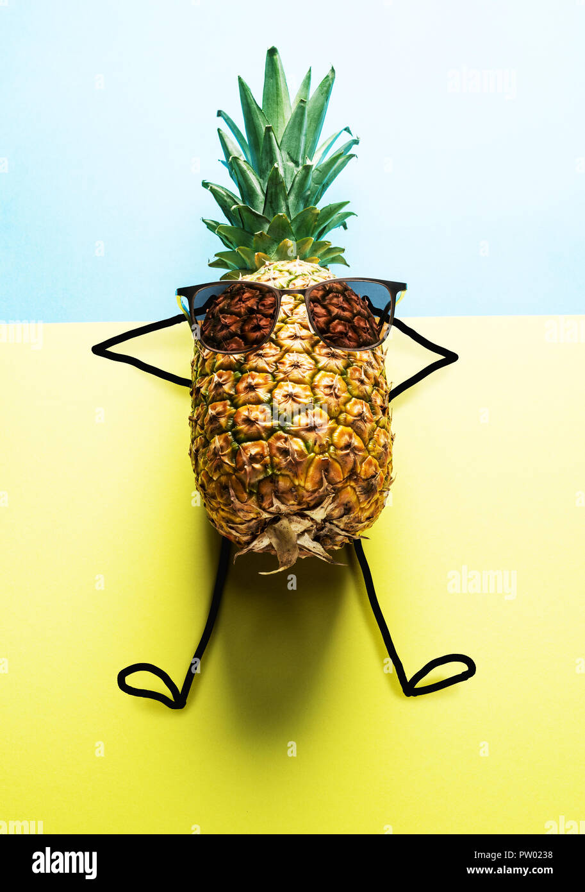
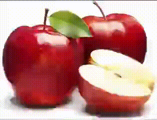

my life
An apple is a round, edible fruit produced by an apple tree (Malus spp.).
Fruit trees of the orchard or domestic apple (Malus domestica), the most widely grown in the genus, are cultivated worldwide. The tree originated in Central Asia, where its wild ancestor, Malus sieversii, is still found.


| name | age | gender | fav_food | fav_color |
|---|---|---|---|---|
| tata | 5 | M | sticky rice | red |
| tada | 4 | F | fried rice | yellow |
| jonh | 70 | M | apple | blue |
| hello | 51 | M | mango | orange |
| mama | 93 | F | seafood | green |